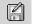
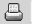

{% include JB/setup %}
{% raw %}
<div>
<div class="book" xml:lang="en"><div class="book"><div class="book"><div class="book"><h1 class="title"><a id="gnu3-CHP-1-SECT-5" class="calibre1"></a>About the Emacs Display</h1></div></div></div><p class="copyright">When you enter
<a id="gnu3-CHP-1-ITERM-1562" class="calibre2"></a>
            <a id="gnu3-CHP-1-ITERM-1563" class="calibre2"></a>Emacs,
you see a large workspace near the top of the window where you do
your editing. (See <a class="calibre2" href="ch01s05.html#gnu3-CHP-1-FIG-1" title="Figure 1-1. Understanding the Emacs display">Figure 1-1</a>.)</p><div class="figure"><a id="gnu3-CHP-1-FIG-1" class="calibre2"></a><div class="figure-contents"><div class="mediaobject"><a id="I_1_tt7" class="calibre2"></a></div></div><p class="title3"><b class="calibre25">Figure 1-1. Understanding the Emacs display</b></p></div><br class="book"/><p class="copyright">A <span><em class="calibre7">cursor</em></span> marks your position. The
<a id="gnu3-CHP-1-ITERM-1564" class="calibre2"></a>
            <a id="gnu3-CHP-1-ITERM-1565" class="calibre2"></a>cursor
is also called <span><em class="calibre7">point</em></span>, particularly among people
who are more familiar with Emacs and in the online help system;
therefore, it's useful to remember this term.</p><p class="copyright">You don't have to do anything special before you
start typing. As long as you type alphanumeric characters and
punctuation, Emacs inserts them into your buffer. The cursor
indicates where Emacs inserts the new characters; it moves as you
type. Unlike many editors (particularly <span><strong class="calibre5">vi</strong></span>), Emacs does not have separate modes for
inserting text and giving commands. Try typing something right now,
and you'll begin to see how easy Emacs is to use.
(If you get stuck for any reason, just press <span><strong class="calibre5">C-g</strong></span>.)</p><div class="book" xml:lang="en"><div class="book"><div class="book"><div class="book"><h2 class="title1"><a id="gnu3-CHP-1-SECT-5.1" class="calibre1"></a>The Toolbar</h2></div></div></div><p class="copyright">The toolbar is a new feature
<a id="gnu3-CHP-1-ITERM-1566" class="calibre2"></a>in Emacs 21. Its
basic icons and their functions are listed in <a class="calibre2" href="ch01s05.html#gnu3-CHP-1-TABLE-3" title="Table 1-3. Icons on the Emacs toolbar">Table 1-3</a>. Note that the toolbar is context sensitive;
in some modes, such as the Info mode for reading the Emacs manual,
the toolbar changes to provide browsing help. We'll
discuss those icons
<a id="gnu3-CHP-1-ITERM-1567" class="calibre2"></a>
               <a id="gnu3-CHP-1-ITERM-1568" class="calibre2"></a>when we cover the relevant modes.</p><div class="book"><a id="gnu3-CHP-1-TABLE-3" class="calibre2"></a><p class="title2"><b class="calibre25">Table 1-3. Icons on the Emacs toolbar</b></p><div class="table-contents"><table summary="Icons on the Emacs toolbar" class="calibre8"><colgroup class="calibre9"><col class="calibre10"/><col class="calibre10"/><col class="calibre10"/></colgroup><thead class="calibre11"><tr class="calibre12"><th class="calibre26">
                           <p class="copyright">Icon</p>
                        </th><th class="calibre26">
                           <p class="copyright">Function</p>
                        </th><th class="calibre27">
                           <p class="copyright">Where to learn more</p>
                        </th></tr></thead><tbody class="calibre15"><tr class="calibre12"><td class="calibre28">
                           <p class="copyright">
                              </p><div class="book"><div class="mediaobject"><a id="I_1_tt8" class="calibre2"></a></div></div><p class="copyright">
                           </p>
                        </td><td class="calibre28">
                           <p class="copyright">Find a file or create a new file (supplying the filename).</p>
                        </td><td class="calibre29">
                           <p class="copyright">This chapter</p>
                        </td></tr><tr class="calibre12"><td class="calibre28">
                           <p class="copyright">
                              </p><div class="book"><div class="mediaobject"><a id="I_1_tt9" class="calibre2"></a></div></div><p class="copyright">
                           </p>
                        </td><td class="calibre28">
                           <p class="copyright">Start the directory editor so you can manipulate files and folder.</p>
                        </td><td class="calibre29">
                           <p class="copyright">
                              <a class="calibre2" href="ch05.html" title="Chapter 5. Emacs as a Work Environment">Chapter 5</a>
                           </p>
                        </td></tr><tr class="calibre12"><td class="calibre28">
                           <p class="copyright">
                              </p><div class="book"><div class="mediaobject"><a id="I_1_tt10" class="calibre2"></a></div></div><p class="copyright">
                           </p>
                        </td><td class="calibre28">
                           <p class="copyright">Kill the current buffer.</p>
                        </td><td class="calibre29">
                           <p class="copyright">
                              <a class="calibre2" href="ch04.html" title="Chapter 4. Using Buffers, Windows, and Frames">Chapter 4</a>
                           </p>
                        </td></tr><tr class="calibre12"><td class="calibre28">
                           <p class="copyright">
                              </p><div class="book"><div class="mediaobject"><a id="I_1_tt11" class="calibre2"></a></div></div><p class="copyright">
                           </p>
                        </td><td class="calibre28">
                           <p class="copyright">Save current buffer in its associated file.</p>
                        </td><td class="calibre29">
                           <p class="copyright">This chapter</p>
                        </td></tr><tr class="calibre12"><td class="calibre28">
                           <p class="copyright">
                              </p><div class="book"><div class="mediaobject"><a id="I_1_tt12" class="calibre2"></a></div></div><p class="copyright">
                           </p>
                        </td><td class="calibre28">
                           <p class="copyright">Save current buffer as a different file.</p>
                        </td><td class="calibre29">
                           <p class="copyright">This chapter</p>
                        </td></tr><tr class="calibre12"><td class="calibre28">
                           <p class="copyright">
                              </p><div class="book"><div class="mediaobject"><a id="I_1_tt13" class="calibre2"></a></div></div><p class="copyright">
                           </p>
                        </td><td class="calibre28">
                           <p class="copyright">Undo.</p>
                        </td><td class="calibre29">
                           <p class="copyright">
                              <a class="calibre2" href="ch02.html" title="Chapter 2. Editing">Chapter 2</a>
                           </p>
                        </td></tr><tr class="calibre12"><td class="calibre28">
                           <p class="copyright">
                              </p><div class="book"><div class="mediaobject"><a id="I_1_tt14" class="calibre2"></a></div></div><p class="copyright">
                           </p>
                        </td><td class="calibre28">
                           <p class="copyright">Cut text that comprises the current region.</p>
                        </td><td class="calibre29">
                           <p class="copyright">
                              <a class="calibre2" href="ch02.html" title="Chapter 2. Editing">Chapter 2</a>
                           </p>
                        </td></tr><tr class="calibre12"><td class="calibre28">
                           <p class="copyright">
                              </p><div class="book"><div class="mediaobject"><a id="I_1_tt15" class="calibre2"></a></div></div><p class="copyright">
                           </p>
                        </td><td class="calibre28">
                           <p class="copyright">Copy text in current region.</p>
                        </td><td class="calibre29">
                           <p class="copyright">
                              <a class="calibre2" href="ch02.html" title="Chapter 2. Editing">Chapter 2</a>
                           </p>
                        </td></tr><tr class="calibre12"><td class="calibre28">
                           <p class="copyright">
                              </p><div class="book"><div class="mediaobject"><a id="I_1_tt16" class="calibre2"></a></div></div><p class="copyright">
                           </p>
                        </td><td class="calibre28">
                           <p class="copyright">Paste cut or copied text.</p>
                        </td><td class="calibre29">
                           <p class="copyright">
                              <a class="calibre2" href="ch02.html" title="Chapter 2. Editing">Chapter 2</a>
                           </p>
                        </td></tr><tr class="calibre12"><td class="calibre28">
                           <p class="copyright">
                              </p><div class="book"><div class="mediaobject"><a id="I_1_tt17" class="calibre2"></a></div></div><p class="copyright">
                           </p>
                        </td><td class="calibre28">
                           <p class="copyright">Search for a string.</p>
                        </td><td class="calibre29">
                           <p class="copyright">
                              <a class="calibre2" href="ch03.html" title="Chapter 3. Search and Replace">Chapter 3</a>
                           </p>
                        </td></tr><tr class="calibre12"><td class="calibre28">
                           <p class="copyright">
                              </p><div class="book"><div class="mediaobject"><a id="I_1_tt18" class="calibre2"></a></div></div><p class="copyright">
                           </p>
                        </td><td class="calibre28">
                           <p class="copyright">Print page (with headings).</p>
                        </td><td class="calibre29">
                           <p class="copyright">
                              <a class="calibre2" href="ch05.html" title="Chapter 5. Emacs as a Work Environment">Chapter 5</a>
                           </p>
                        </td></tr><tr class="calibre12"><td class="calibre28">
                           <p class="copyright">
                              </p><div class="book"><div class="mediaobject"><a id="I_1_tt19" class="calibre2"></a></div></div><p class="copyright">
                           </p>
                        </td><td class="calibre28">
                           <p class="copyright">Customize using interactive interface.</p>
                        </td><td class="calibre29">
                           <p class="copyright">
                              <a class="calibre2" href="ch10.html" title="Chapter 10. Customizing Emacs">Chapter 10</a>
                           </p>
                        </td></tr><tr class="calibre12"><td class="calibre30">
                           <p class="copyright">
                              </p><div class="book"><div class="mediaobject"><a id="I_1_tt20" class="calibre2"></a></div></div><p class="copyright">
                           </p>
                        </td><td class="calibre30">
                           <p class="copyright">Start online help system.</p>
                        </td><td class="calibre31">
                           <p class="copyright">
                              <a class="calibre2" href="ch14.html" title="Chapter 14. The Help System">Chapter 14</a>
                           </p>
                        </td></tr></tbody></table></div></div><br class="book"/><p class="copyright">If you don't like the toolbar, you
<a id="gnu3-CHP-1-ITERM-1569" class="calibre2"></a>
               <a id="gnu3-CHP-1-ITERM-1570" class="calibre2"></a>can
hide it using a menu option (Options<span>→</span> Show/Hide<span>→</span>
Toolbar), and choosing Options<span>→</span> Save Options. For more
information, see <a class="calibre2" href="ch02s07.html" title="Making Emacs Work the Way You Want">Section 2.7</a> at the end of <a class="calibre2" href="ch02.html" title="Chapter 2. Editing">Chapter 2</a>.</p></div><div class="book" xml:lang="en"><div class="book"><div class="book"><div class="book"><h2 class="title1"><a id="gnu3-CHP-1-SECT-5.2" class="calibre1"></a>The Menus</h2></div></div></div><p class="copyright">The menu bar menu <a id="gnu3-CHP-1-ITERM-1571" class="calibre2"></a>lists the options File, Edit, Options,
Buffers, Tools, and Help; you can explore them to see what options
are available.</p><p class="copyright">In addition to navigating
<a id="gnu3-CHP-1-ITERM-1572" class="calibre2"></a>
               <a id="gnu3-CHP-1-ITERM-1573" class="calibre2"></a>the menus using the mouse, Emacs now
offers pop-up menus. In the Emacs window, hold down <span><strong class="calibre5">Ctrl</strong></span> and click the right mouse button to pop
up the Edit menu<span><strong class="calibre5">.<sup class="calibre6">[<a id="gnu3-CHP-1-FNOTE-2" href="#ftn.gnu3-CHP-1-FNOTE-2" class="calibre2">2</a>]</sup>
               </strong></span>
            </p><p class="copyright">You can access menus without
<a id="gnu3-CHP-1-ITERM-1574" class="calibre2"></a>
               <a id="gnu3-CHP-1-ITERM-1575" class="calibre2"></a>a mouse using the keyboard. In this
case, using keyboard commands is much more efficient than menus, but
for completeness, we'll show you how to use the
text-based menus. (If you prefer to use the mouse with Emacs but have
access only to a text interface, see <a class="calibre2" href="ch13.html" title="Chapter 13. Platform-Specific Considerations">Chapter 13</a>
to learn how to download and install a version of Emacs that runs
graphically on Unix, Linux, Mac OS X, or Windows.)</p><p class="copyright">If your mouse does not work with the menus, press <span><strong class="calibre5">F10</strong></span> or <span><strong class="calibre5">M-`</strong></span> (a
back quote, the single open quotation mark, located above the
<span><strong class="calibre5">Tab</strong></span> key in the upper-left corner of
many keyboards) to access them.</p><div class="book"><a id="ch01-5-fm2xml" class="calibre2"></a><table class="calibre8"><colgroup class="calibre9"><col class="calibre10"/></colgroup><tbody class="calibre15"><tr class="calibre12"><td class="calibre17">
                           <p class="copyright">Press: <span><strong class="calibre5">F10</strong></span>
                           </p>
                        </td></tr><tr class="calibre12"><td class="calibre17">
                           <p class="copyright">
                              </p><div class="book"><div class="mediaobject"><a id="I_1_tt21" class="calibre2"></a></div></div><p class="copyright">
                           </p>
                        </td></tr><tr class="calibre12"><td class="calibre19">
                           <p class="copyright">Using text-based menus (Emacs 21.2 on Mac OS X Terminal application).</p>
                        </td></tr></tbody></table></div><p class="copyright">
               <a id="gnu3-CHP-1-ITERM-1576" class="calibre2"></a>You can select
text-based menu
<a id="gnu3-CHP-1-ITERM-1577" class="calibre2"></a>
               <a id="gnu3-CHP-1-ITERM-1578" class="calibre2"></a>options in three ways:</p><div class="book"><ul class="itemizedlist"><li class="listitem"><p class="copyright">
                     <a id="gnu3-CHP-1-ITERM-1579" class="calibre2"></a>You can press <span><strong class="calibre5">Enter</strong></span> to select the default option that
appears in the minibuffer. If you want a different one, press the up
or down arrow key until the option you want appears and press
<span><strong class="calibre5">Enter</strong></span>.</p></li><li class="listitem"><p class="copyright">You can type the letter preceding the option in the
<code class="calibre21">*Completions*</code> buffer. For example, type <span><strong class="calibre5">f</strong></span> to choose <span><strong class="calibre5">File</strong></span>.</p></li><li class="listitem"><p class="copyright">You can press <span><strong class="calibre5">PgUp</strong></span> to move to the
<code class="calibre21">*Completions*</code> buffer, then use the arrow keys to
move to the option you want. Press <span><strong class="calibre5">Enter</strong></span>. (On Mac OS X, press <span><strong class="calibre5">Shift-PgUp</strong></span> instead.)</p></li></ul></div><p class="copyright">After you select a menu option, choices for that menu appear. Repeat
the process until you find the option you're looking
for.</p></div><div class="book" xml:lang="en"><div class="book"><div class="book"><div class="book"><h2 class="title1"><a id="gnu3-CHP-1-SECT-5.3" class="calibre1"></a>The Mode Line</h2></div></div></div><p class="copyright">Just above <a id="gnu3-CHP-1-ITERM-1580" class="calibre2"></a>the
bottom of the window (on the second-to-last line), Emacs prints a lot
of information about what it's doing. This line is
called the <span><em class="calibre7">mode line</em></span>. At the beginning of the
mode line, you may see some information about the coding system that
Emacs is using for the file; usually you'll see just
<code class="calibre21">--</code>:, indicating that there is no unusual encoding
scheme in place. Near the left edge of the mode line, you may see two
asterisks (<code class="calibre21">**</code>). These <a id="gnu3-CHP-1-ITERM-1581" class="calibre2"></a>
               <a id="gnu3-CHP-1-ITERM-1582" class="calibre2"></a>
               <a id="gnu3-CHP-1-ITERM-1583" class="calibre2"></a>asterisks indicate that
you've modified whatever you're
editing. If you haven't made any changes, the
asterisks won't be there. Next, Emacs prints the
name of the buffer <a id="gnu3-CHP-1-ITERM-1584" class="calibre2"></a>
               <a id="gnu3-CHP-1-ITERM-1585" class="calibre2"></a>you
are editing (<code class="calibre21">*scratch*</code>). Following this, Emacs
shows where you are in the buffer—your position relative to the
rest of the file and what line you are on (<code class="calibre21">L5</code> for
line 5 in <a class="calibre2" href="ch01s05.html#gnu3-CHP-1-FIG-1" title="Figure 1-1. Understanding the Emacs display">Figure 1-1</a>). If you're
at the beginning of the file, Emacs prints the word
<code class="calibre21">Top</code>; if you're at the end, it
prints <code class="calibre21">Bot</code>; if you're in the
middle, it shows you a percentage (for example,
<code class="calibre21">50%</code> means you're looking at the
midpoint); and if the entire file is visible, Emacs prints the word
<code class="calibre21">All</code>. In parentheses following this is the editing
mode or modes you are in, in this case <code class="calibre21">Lisp
Interaction</code> is the major mode (no minor modes are active).
The scrollbar on the side of the window also indicates your position
in the file.<sup class="calibre6">[<a id="gnu3-CHP-1-FNOTE-3" href="#ftn.gnu3-CHP-1-FNOTE-3" class="calibre2">3</a>]</sup>
            </p><p class="copyright">You will often work with several buffers simultaneously. In this
case, each buffer has its own mode line, and when you switch buffers,
the mode line reflects the state of the current buffer.
Don't worry about this for now; just remember that
every buffer has a mode line to describe it.</p></div><div class="book" xml:lang="en"><div class="book"><div class="book"><div class="book"><h2 class="title1"><a id="gnu3-CHP-1-SECT-5.4" class="calibre1"></a>The Minibuffer</h2></div></div></div><p class="copyright">Below
<a id="gnu3-CHP-1-ITERM-1586" class="calibre2"></a>
               <a id="gnu3-CHP-1-ITERM-1587" class="calibre2"></a>the
mode line is the <span><em class="calibre7">minibuffer</em></span>. This is the area
where Emacs echoes the commands you enter and where you specify
filenames for Emacs to find, values for search and replace, and so
on. It is also where Emacs displays error messages. If you find
yourself stuck in the minibuffer, press <span><strong class="calibre5">C-g</strong></span> to get out again.</p></div><div class="book"><br class="book"/><hr class="calibre4"/><div class="book"><p class="copyright"><sup class="calibre6">[<a id="ftn.gnu3-CHP-1-FNOTE-2" href="#gnu3-CHP-1-FNOTE-2" class="calibre2">2</a>] </sup>Emacs works
best with a three-button mouse (more buttons are okay, too).</p></div><div class="book"><p class="copyright"><sup class="calibre6">[<a id="ftn.gnu3-CHP-1-FNOTE-3" href="#gnu3-CHP-1-FNOTE-3" class="calibre2">3</a>] </sup>The scrollbar's
location depends on the platform and windowing system
you're using. Linux puts scrollbars on the left
while Mac OS X and Windows put them on the right by default. Note
also that the order of the information in the mode line is different
if you run Emacs in a terminal window.</p></div></div></div></div>

{% endraw %}

